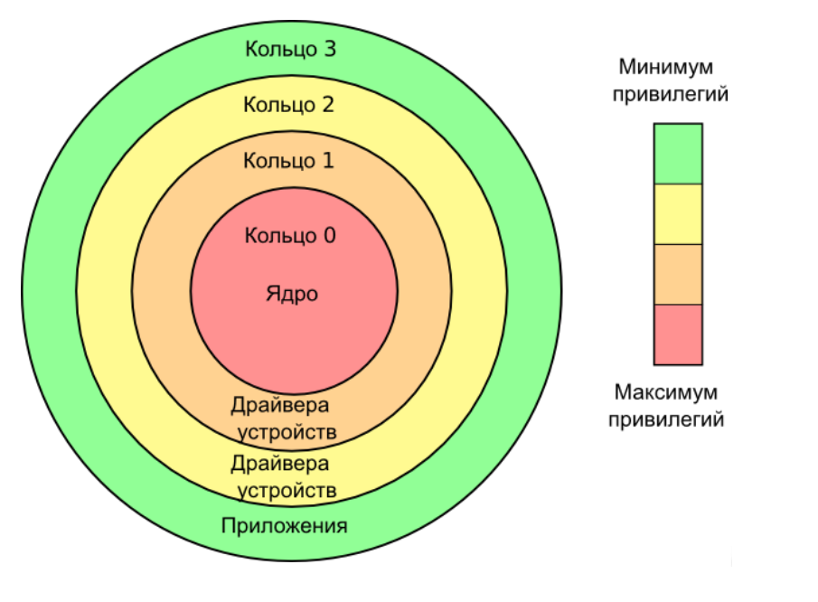

Кольца защиты — архитектура информационной безопасности и функциональной отказоустойчивости, реализующая аппаратное разделение системного и пользовательского уровней привилегий. Структуру привилегий можно изобразить в виде нескольких концентрических кругов. В этом случае системный режим (режим супервизора или нулевое кольцо, так называемое «кольцо 0»), обеспечивающий максимальный доступ к ресурсам, является внутренним кругом, тогда как режим пользователя с ограниченным доступом — внешним. Традиционно семейство микропроцессоров x86 обеспечивает четыре кольца защиты.
Механизм колец строго ограничивает пути, с помощью которых управление можно передать от одного кольца к другому, а также предписывает ограничения на операции доступа к памяти, которые могут быть произведены внутри кольца. Обычно существует некоторая инструкция (шлюз), которая передаёт контроль из менее защищённого в более защищённое (с меньшим номером) кольцо; это известно как запрос супервизора во многих операционных системах, использующих кольцевую архитектуру. Этот механизм разработан для того, чтобы ограничить возможности случайного или намеренного нарушения безопасности.
Защита кольца может сочетаться с режимами процессора (режим master/kernel/privileged против режима slave/user/unprivileged) в некоторых системах. Операционные системы, выполняющиеся на аппаратном обеспечении, поддерживающем такие режимы, могут использовать оба способа защиты или только один из них.
Эффективное использование архитектуры колец защиты требует тесного взаимодействия между аппаратными средствами и операционной системой. Операционные системы, разрабатывающиеся так, чтобы они работали на большом количестве платформ, могут иметь различную реализацию механизма колец на каждой платформе. Часто модель безопасности упрощают до двух уровней доступа: уровня «ядра» и уровня «пользователя», даже если аппаратные средства обеспечивают большую степень детализации уровней выполнения.
